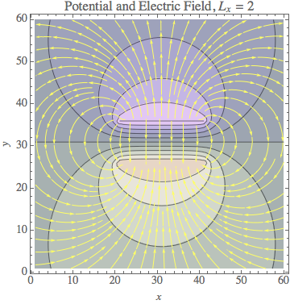
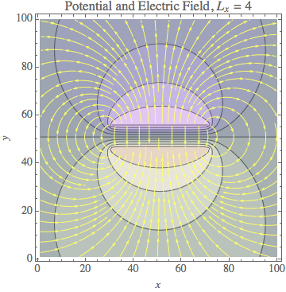
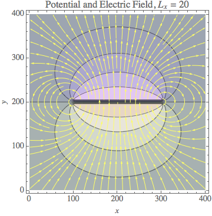
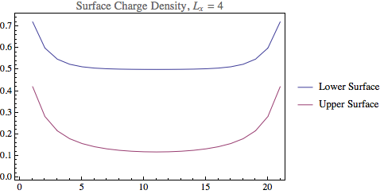
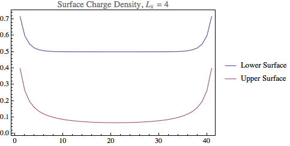
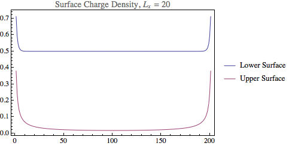

Mikhail Gaerlan 23 November 2015
The SOR method was used to solve the following for a parallel-plate capacitor $\displaystyle{\nabla^2V=0.}$
  
  
The ratio of c/c0 was close to but greater than 1.